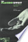

Web
Images
Videos
Maps
News
Shopping
Gmail
more
▼
Books
Finance
Translate
Scholar
Blogs
Realtime
YouTube
Calendar
Photos
Documents
Reader
Sites
Groups
even more »
My library
|
Help
|
Sign in
Advanced Book Search
Visions of compassion: Western scientists and Tibetan Buddhists examine ...
By Richard J. Davidson, Anne Harrington
2 Reviews
Write review
About this book
Add to My Library
▼
Google eBook
New!
This edition is available as an eBook.
Learn more
$46.36
$57.95
Buy now
View sample
Terms of Service
Get this book
Oxford
Amazon.com
Barnes&Noble.com
Books-A-Million
Find in a library
All sellers »
Related books

Pages displayed by permission of
Oxford University Press US
.
Copyright
.
Page xi